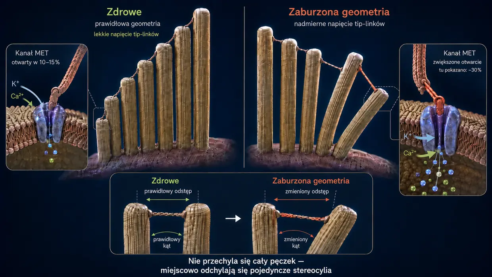
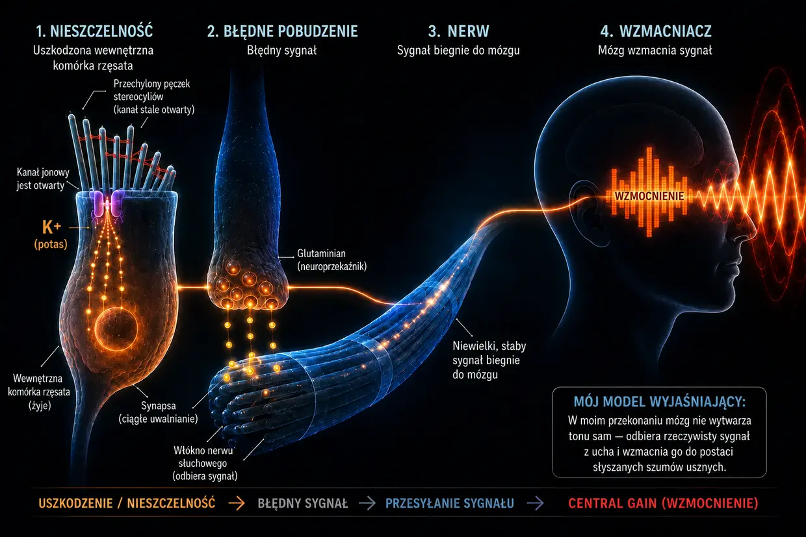

Szumy uszne wywołane hałasem — gdy ucho dochodzi do granic wytrzymałości
Ostatnia aktualizacja: czerwiec 2026
To moje własne wyjaśnienie, oparte na latach zgłębiania tematu i osobistych doświadczeniach z szumami usznymi, które dwukrotnie całkowicie u mnie ustąpiły — nie jest to standard medyczny.
Ja również zmagałem się wtedy z tym skrajnie obciążającym schorzeniem — jak opisałem już w swojej biografii.
Byłem tak zdesperowany, że przysiągłem sobie: albo odejdą szumy uszne, albo odejdę ja. (Oczywiście nie mówiłem tego całkiem serio, ale naprawdę znajdowałem się pod potworną presją.)
To, czego wtedy doświadczałem, było przede wszystkim głośnym, przenikliwym tonem o wysokiej częstotliwości w lewym uchu, któremu towarzyszył szum gdzieś daleko w tle. Było to najgorsze, co potrafiłem sobie wówczas wyobrazić. Jakby tego było mało, trzeciego dnia w prawym uchu był już obecny także cichy ton. Późniejsze zalecenia lekarzy — które w moim przypadku okazały się kompletnie błędne — wyraźnie nasiliły ten ton.
Sedno tych „zaleceń” sprowadzało się do zagłuszania tonu kolejnymi dźwiękami — na przykład głośniejszą muzyką w słuchawkach albo stale odtwarzanym szumem. W rzeczywistości oznaczało to jednak, że moje uszy były wystawiane na jeszcze więcej bodźców akustycznych, choć już wcześniej były potężnie przeciążone. Z perspektywy czasu był to jeden z największych błędów, bo właśnie przez to mój stan się pogorszył, a cichy ton w prawym uchu stał się wyraźnie silniejszy.
Ten dźwięk był jak nieustanny atak na moje nerwy, sen i całe życie. Lekarze mówili mi, że muszę nauczyć się z nim żyć. W internecie znajdowałem wzajemnie sprzeczne terapie. Dla mnie wszystko to brzmiało jak bezradność.
Przysiągłem więc sobie: to nie może być wszystko. Zacząłem jak opętany zgłębiać temat, czytać badania, porównywać relacje innych osób i budować własny obraz sytuacji. Krok po kroku wyłonił się z tego jasny mechanizm — obraz, który był dla mnie logiczny i który znalazł później potwierdzenie także w moich własnych doświadczeniach.
Dziś mogę powiedzieć: szumy uszne wywołane hałasem nie są żadną tajemnicą. Są skutkiem przeciążenia ucha — a kiedy rozumie się, co tam zachodzi, można też zrozumieć, skąd bierze się ten dźwięk i co można zrobić samodzielnie.
W skrócie 60 sekund czytania — wszystko, co najważniejsze
Przy skrajnej głośności, na przykład na dyskotece, pompy po prostu przestają nadążać. Zużycie energii (ATP) eksploduje, komórka nie jest już w stanie uzupełniać jej na bieżąco i przechodzi w niedoskonały tryb awaryjny, w którym powstaje kwas mlekowy, a środowisko komórkowe ulega zakwaszeniu — to spirala spadkowa podobna do upadku mięśniowego podczas sprintu. Gdy pompy nie nadążają, we wnętrzu maleńkich stereocyliów gromadzi się wapń. Jego nadmiar aktywuje enzymy rozkładające (kalpainy), które pożerają „klej” — białka sieciujące — pomiędzy wewnętrznymi włóknami strukturalnymi stereocylium. Bez tego kleju włosek traci sztywność i się odkształca. Przez to kanał jonowy na szczycie pozostaje stale zbyt szeroko otwarty — jak uchylone okno. Przez ten nieustanny przeciek stale napływa potas, utrzymując całą komórkę w stanie ciągłej depolaryzacji. Napięcie to otwiera kolejne kanały w wewnętrznej komórce rzęsatej. Przez nie wapń sączy się ku synapsie i wywołuje tam nieprzerwane uwalnianie glutaminianu do nerwu słuchowego. Mózg odbiera ten cichy, lecz stały błędny sygnał, rozpoznaje brak normalnego dopływu bodźców w tym zakresie częstotliwości i skrajnie podkręca swój wewnętrzny przedwzmacniacz — tak zwany Central Gain. Dopiero dzięki temu wzmocnieniu subtelny błędny sygnał staje się świadomie słyszalnym tonem, który odbieramy jako szumy uszne.
Dobra wiadomość: dopóki komórka żyje, zachowuje plan budowy i zdolność do naprawy. Potrzebuje do tego energii, materiału budulcowego i spokoju.
Co naprawdę dzieje się w uchu: jak przebiega prawidłowy fizjologiczny proces słyszenia
Zanim przejdziemy dalej, krótkie wyjaśnienie pojęć, żebyśmy w całym tekście rozumieli je tak samo. W uchu wewnętrznym znajdują się tak zwane komórki rzęsate — właściwe komórki czuciowe odpowiedzialne za słuch. Na powierzchni każdej z nich znajduje się pęczek maleńkich, palczastych wypustek — stereocyliów. W zależności od położenia w ślimaku na jedną komórkę rzęsatą przypada ich około 50–300. Są ustawione rzędami od najkrótszych do najdłuższych, jak piszczałki organów. Każde stereocylium ma własny wewnętrzny szkielet podporowy z białek aktynowych. W języku potocznym, a często także w opisach naukowych, stereocylia nazywa się po prostu „włoskami” albo „włoskami czuciowymi” — i właśnie tak będę określał je również na tej stronie. Ważne: kiedy piszę o „włosku”, zawsze mam na myśli stereocylium znajdujące się na komórce rzęsatej, a nie samą komórkę rzęsatą.
W prawidłowych warunkach słyszenie przebiega jak niezwykle precyzyjna reakcja łańcuchowa:
Bodziec: fala dźwiękowa trafia na delikatne włoski (stereocylia) komórek rzęsatych i odchyla je na bok.
Naprężenie mechaniczne (tip-linki): ponieważ szczyty sąsiednich włosków są połączone niezwykle cienkimi nićmi białkowymi — tip-linkami — ich odchylenie wytwarza naprężenie. Nici te działają jak mechaniczna linka: fizycznie otwierają kanał jonowy na szczycie, podobnie jak wyciąga się korek z odpływu wanny.
Napływ jonów: ponieważ ucho wewnętrzne jest wypełnione płynem bogatym w potas, przez otwarty kanał do włoska czuciowego natychmiast napływa potas (K⁺), a w niewielkiej ilości również wapń.
Aktywacja: napływ potasu zmienia napięcie elektryczne komórki rzęsatej, czyli powoduje jej depolaryzację. To z kolei otwiera kanały wapniowe położone niżej w samej komórce rzęsatej — nie we włoskach czuciowych, lecz w znajdującym się pod nimi ciele komórki.
Sygnał: dopiero ten napływ wapnia powoduje w wewnętrznej komórce rzęsatej uwolnienie neuroprzekaźników, które przekazują sygnał przez nerw słuchowy do mózgu.
Reset: następnie wyspecjalizowane transportery — zarówno w stereocyliach, jak i w ciele komórki rzęsatej — wypompowują nadmiar potasu i wapnia z wykorzystaniem ATP, czyli energii komórkowej. Dzięki temu komórka może się uspokoić.
System ten jest zaprojektowany tak, aby stale następowało niewielkie „otwarcie i zamknięcie” — niczym rytm oddechu. Kluczowe jest to, że kanał na szczycie włoska w stanie spoczynku nie jest całkowicie zamknięty. Zawsze pozostaje minimalnie otwarty — to normalne i potrzebne, aby komórka mogła natychmiast reagować nawet na najcichszy dźwięk. Dopóki włosek stoi prosto, otwarcie jest małe i kontrolowane. Gdy jednak włosek pozostaje stale odchylony na bok, kanał jest otwarty zdecydowanie za szeroko — i właśnie to staje się problemem.
Zanim przyjrzymy się temu, co dzieje się po przeciążeniu tego systemu, jedna ważna myśl. Gdy po urazie akustycznym rozwijają się przewlekłe szumy uszne, wiele osób sądzi — a wielu lekarzy przekazuje podobny obraz — że komórki rzęsate w uchu zostały bezpowrotnie zniszczone, a mózg sam wytwarza dźwięk z pamięci. W moim przekonaniu to wyjaśnienie jest zbyt wąskie. Martwa wewnętrzna komórka rzęsata nie wysyła już żadnego sygnału — milczy. Właśnie dlatego, że ton JEST, wewnętrzna komórka rzęsata musi nadal żyć. Szumy uszne nie są oznaką martwej wewnętrznej komórki rzęsatej, lecz wewnętrznej komórki rzęsatej walczącej o przetrwanie. Owszem, wskutek hałasu niektóre komórki rzęsate mogą ostatecznie obumrzeć. W moim rozumieniu nie uczestniczą one jednak w powstawaniu tonu, bo nie wysyłają już żadnego sygnału. Ton pochodzi z wewnętrznych komórek rzęsatych, które nadal żyją i walczą, lecz utknęły w stanie zaburzenia czynności o podłożu energetycznym.
Dalej przedstawiam szczegółowe wyjaśnienie tego zaburzenia czynności, krok po kroku. Jeśli wolisz wersję skróconą, znajdziesz ją wyżej na tej stronie.
Kiedy hałas staje się zbyt silny (co dzieje się podczas pobytu na dyskotece)
Gdy jednak zbyt dużo dźwięku dociera do ucha naraz albo działa na nie przez dłuższy czas (przewlekle), równowaga się załamuje, a mechanika zawodzi. Nie każdy pobyt na dyskotece do tego prowadzi. Jeśli jednak rozwijają się szumy uszne wywołane hałasem, to właśnie ten mechanizm jest — w moim przekonaniu — ich podłożem: kaskada utraty energii, mechanicznego załamania i chemicznego zalania. Te trzy procesy wzajemnie się napędzają i tworzą błędne koło.
- 01Załamanie energetyczne
- 02Załamanie mechaniczne
- 03Ratunek awaryjny i kołowrotek dla chomika
Etap 1: załamanie energetyczne
Przypomnijmy sobie prawidłowy proces słyszenia: przy każdym bodźcu akustycznym do komórki napływają jony, które później trzeba wypompować z wykorzystaniem ATP. Przy normalnej głośności jest to spokojny rytm — komórka spokojnie pompuje i ma energii pod dostatkiem. Przy poziomie 100 decybeli na dyskotece fale dźwiękowe uderzają jednak we włoski bez przerwy i z brutalną siłą. Kanały otwierają się gwałtownie, jony napływają masowo, a pompy zwyczajnie przestają nadążać. Zużycie energii eksploduje.
Komórki rzęsate spalają teraz znacznie więcej energii, niż są w stanie na bieżąco wytworzyć. Zwykłe elektrownie komórki, czyli mitochondria, pracują na granicy możliwości. Aby w ogóle zaspokoić ogromny głód energii, komórka sięga po szybszą, lecz niedoskonałą drogę awaryjną: glikolizę beztlenową. Ten tryb awaryjny natychmiast dostarcza energię, ale jako produkt uboczny wytwarza kwas mlekowy, czyli mleczan, który zakwasza środowisko komórkowe. Pod wpływem kwasu enzymy odpowiedzialne za produkcję energii działają coraz mniej wydajnie — i zaczyna się spirala spadkowa.
Porównanie ze sportem: każdy zna to z treningu siłowego albo sprintu. Po pewnym czasie mięsień zaczyna „płonąć” wskutek wzrostu stężenia mleczanu, aż w końcu po prostu odmawia posłuszeństwa — to klasyczny upadek mięśniowy. Dokładnie takie chemiczne załamanie zachodzi również w uchu wewnętrznym, tyle że nie odczuwa się go jako bólu, lecz jako utratę funkcji.
I właśnie tutaj czai się prawdziwe niebezpieczeństwo: gdy pompy nie nadążają, we wnętrzu stereocyliów gromadzi się wapń. W niewielkich ilościach jest on normalny i potrzebny, lecz w nadmiarze staje się niszczycielski. Co dokładnie niszczy i dlaczego ma to tak poważne skutki, pokazuje etap 2.
Etap 2: załamanie mechaniczne
Aby zrozumieć, co wapń robi w tym momencie, trzeba najpierw wiedzieć, jak włosek czuciowy jest zbudowany od środka. Składa się z setek równoległych filamentów aktynowych — można je sobie wyobrazić jako pęczek suchego spaghetti. Filamenty są połączone krótkimi mostkami białkowymi, tak zwanymi crosslinkerami, czyli białkami sieciującymi. To właśnie crosslinkery pełnią funkcję statyka całej konstrukcji włoska: tak mocno spajają pęczek, że stoi on samodzielnie, sztywny jak stalowa rura, bez zużywania energii. Dopóki crosslinkery są nienaruszone, włosek pozostaje wyprostowany.
Utrata energii z etapu 1 uruchamia teraz fatalną reakcję łańcuchową:
Pompy zostają zalane (powódź wapniowa): jak widzieliśmy przy prawidłowym procesie słyszenia, wraz z potasem do włoska czuciowego zawsze napływa również niewielka ilość wapnia. W normalnych warunkach nie stanowi to problemu — w błonie stereocylium znajdują się osobne pompy wapniowe, które natychmiast wypompowują go na zewnątrz. One jednak także potrzebują ATP. Podczas ostrego przeciążenia na dyskotece energii zdecydowanie już nie wystarcza i pompy zostają dosłownie zalane. W rezultacie nawet niewielkie ilości wapnia, które zwykle nie byłyby problemem, gromadzą się we wnętrzu włoska. To właśnie nadmierne stężenie wapnia uruchamia właściwe załamanie struktury.
I teraz następuje właściwe załamanie struktury: nagromadzony wapń aktywuje specjalne enzymy rozkładające — tak zwane kalpainy. Enzymy te pożerają dokładnie te crosslinkery, które przed chwilą poznaliśmy — zaprawę, która spaja pęczek.
Aby zrozumieć, dlaczego ma to tak niszczące skutki, pomoże prosty obraz:
Weź do ręki jedną suchą nitkę spaghetti — możesz ją łatwo wygiąć i złamać. Teraz weź sto nitek spaghetti i sklej je klejem błyskawicznym w jeden sztywny pręt. Nagle otrzymujesz sztywną rurę, którą trudno wygiąć. Pojedyncze nitki są słabe, ale sklejone razem stają się mocne.
Dokładnie tak działa włosek czuciowy: sztywności nie nadają mu same filamenty aktynowe, lecz ich zespolenie przez crosslinkery.
Gdy kalpainy pożrą ten klej, zachodzi proces odwrotny: sztywna rura znowu rozpada się na pojedyncze, luźne nitki. Filamenty aktynowe nadal znajdują się w stereocylium — wciąż tam są — ale bez połączeń pomiędzy nimi przestają tworzyć zwartą całość. Włosek traci sztywność nie dlatego, że coś się odłamało, lecz dlatego, że zniknęła jego wewnętrzna spójność.
Jeśli dana osoba nadal przebywa na dyskotece, sytuacja często staje się jeszcze gorsza: nieosłonięte, osobne filamenty mogą pod wpływem utrzymującego się ciśnienia akustycznego rzeczywiście pękać w słabych miejscach — jak pojedyncze nitki spaghetti, które bez podparcia sąsiednich nitek załamują się pod obciążeniem. Gdy jeden filament pęknie, rośnie obciążenie sąsiednich filamentów, które z kolei także mogą pęknąć. Grozi to efektem kaskadowym.
Rezultat: pozbawiony wewnętrznego podparcia włosek nie potrafi już utrzymać pionowej pozycji i się odkształca. Aby wyobrazić sobie, co to oznacza, pomyśl o włoskach czuciowych ustawionych obok siebie w rzędach. Mają różną długość, a na szczytach łączą je cienkie nici — tip-linki. W zdrowym stanie wszystkie stoją idealnie prosto, nici pomiędzy nimi mają dokładnie właściwe naprężenie, a kanał w spoczynku jest otwarty tylko minimalnie. Nadchodzi fala dźwiękowa: włoski na chwilę odchylają się na bok, nici się napinają, kanał się otwiera. Gdy fala mija, włoski wracają, a wszystko znowu się rozluźnia. Precyzyjne otwarcie i zamknięcie.
Teraz wyobraź sobie, że te same włoski nie stoją już prosto, lecz są miejscowo odchylone — mimo że nie nadchodzi żadna fala. Nici pomiędzy nimi są stale napięte nie tak, jak powinny. Jednocześnie błona także się odkształca. Przez to kanał jest zbyt szeroko otwarty już w spoczynku. Od tej chwili potas i wapń napływają do komórki stale i bez kontroli, choć muzyka już dawno przestała grać. Powstał trwały przeciek — a wraz z nim podstawa szumów usznych. Wewnętrzna komórka rzęsata wysyła sygnał mimo braku dźwięku, bo geometria nie jest już prawidłowa.

U większości osób szumy uszne pojawiają się stosunkowo szybko po zdarzeniu akustycznym — w ciągu kilku minut albo kilku godzin. Zdarzają się jednak również przypadki, w których występują dopiero po wielu godzinach, a nawet po kilku dniach. Dlaczego przebieg bywa tak różny i jaką rolę odgrywają w nim określone struktury ucha, wyjaśniam szczegółowo w sekcji FAQ.
Etap 3: ratunek awaryjny — i dlaczego nie wystarcza
Komórka wykrywa uszkodzenie i natychmiast uruchamia mechanizm przetrwania. Specjalne białka naprawcze, takie jak XIRP2, które są już zgromadzone w ciele komórki jako zapas awaryjny, pędzą do miejsc uszkodzenia. Jeśli filamenty pękły, białka te niczym molekularna taśma pancerna owijają miejsca pęknięć w „nitkach spaghetti” z etapu 2. Nie pozwalają filamentom pęknąć całkowicie i zapobiegają wymknięciu się kaskady spod kontroli. To faza 1: ostra stabilizacja awaryjna. Proces przebiega szybko, w ciągu minut lub godzin, ponieważ XIRP2 nie trzeba najpierw wytwarzać — białko to jest jedynie rekrutowane do miejsca uszkodzenia. Włosek czuciowy przeżywa, ale jego rusztowanie pozostaje miękkie i niestabilne, ponieważ XIRP2 nie potrafi zastąpić brakujących crosslinkerów pomiędzy filamentami.
Teraz bezwzględnie musiałaby się rozpocząć faza 2, czyli aktywna przebudowa, obejmująca dwa osobne place budowy. Po pierwsze, łaty XIRP2 w miejscach pęknięć należałoby zastąpić świeżą, nienaruszoną aktyną. Po drugie, trzeba byłoby wytworzyć nowe crosslinkery i umieścić je pomiędzy filamentami, aby ponownie skleić pęczek w sztywny pręt. Oba zadania zużywają ogromne ilości ATP i wymagają materiału z ciała komórki. Same stereocylia nie mają własnych elektrowni, czyli mitochondriów — są całkowicie zależne od energii dostarczanej z położonego niżej ciała komórki rzęsatej. I właśnie tutaj przewlekła pułapka zatrzaskuje się na większości dorosłych. Dlaczego, wyjaśniam w następnym rozdziale.
-
01Załamanie energetyczne
Zużycie ATP eksploduje, a komórka przechodzi w tryb awaryjny. Gromadzi się kwas mlekowy i środowisko komórkowe ulega zakwaszeniu.
-
02Załamanie mechaniczne
Nadmiar wapnia pożera „klej” pomiędzy filamentami aktynowymi w stereocylium. Włosek się odkształca — powstaje przeciek.
-
03Ratunek awaryjny i kołowrotek dla chomika
XIRP2 stabilizuje miejsca pęknięć. W fazie ostrej komórka przeżywa — ale na właściwą naprawę brakuje energii.
Pułapka kołowrotka dla chomika: dlaczego naprawa wciąż nie dochodzi do skutku
Teraz dochodzimy do kluczowego przejścia od ostrego zdarzenia do przewlekłego problemu.
Gdy tylko hałas ustaje, rozpoczyna się regeneracja. Komórka od razu zaczyna ponownie wytwarzać ATP, a pompy krok po kroku wracają do normalnej pracy. Pełny proces regeneracji — usuwanie zakwaszenia, działania naprawcze i uzupełnianie zapasów energii — postępuje z czasem, a szczególnie podczas snu. Organizm zaczyna więc sprzątać. Ostra powódź jonów — narosła zarówno wskutek potężnego obciążenia na dyskotece, jak i powstałego już przecieku — jest stopniowo usuwana. Skrajnie wysokie stężenie jonów w dużej mierze się normalizuje, a poziom wapnia spada poniżej wartości krytycznej. Enzymy rozkładające, czyli kalpainy, stają się nieaktywne i dalsze niszczenie struktury ustaje.
Dlaczego więc ucho mimo wszystko się nie regeneruje?
Ponieważ trwały przeciek pozostaje. Stereocylia nadal są odchylone, kanał jonowy wciąż pozostaje zbyt szeroko otwarty, a pompy muszą przez całą dobę usuwać ten nadmiar. Aby zrozumieć, dlaczego właśnie to uniemożliwia naprawę, pomoże kolejny obraz:
Zasada „dach–dom–piwnica”
Aby jednym spojrzeniem zrozumieć ten dylemat, wyobraź sobie komórkę rzęsatą jako budynek zasilany przez jeden wspólny licznik energii — ATP:
Dach: delikatne włoski czuciowe, czyli stereocylia, z osłabionym rusztowaniem aktynowym, które utknęły w trybie awaryjnym fazy 1. Tutaj znajduje się przeciek i tutaj właściwie powinna ruszyć machina naprawcza. Zamiast tego pompy w samym dachu są zajęte nieustannym usuwaniem napływającego potasu, a przede wszystkim niebezpiecznego wapnia. Gdyby poziom wapnia w tym miejscu ponownie przekroczył wartość krytyczną, enzymy rozkładające mogłyby znowu się uaktywnić i pogłębić uszkodzenie.
Dom: duże ciało komórki — i JEDYNE miejsce, w którym znajdują się elektrownie, czyli mitochondria, wytwarzające ATP dla wszystkich obszarów komórki. Przez uszkodzony dach bez przerwy napływa teraz nadmiar jonów.
Piwnica: także tutaj znajdują się pompy jonowe. Desperacko wypompowują przesączający się wapń pod prąd, aby dom nie został całkowicie zalany, a komórka nie obumarła.
Ponieważ zarówno pompy w dachu, jak i te w piwnicy zużywają większość dostępnej energii tylko po to, by uratować budynek przed zatopieniem, komórce nie zostają już zasoby na wysłanie ekipy budowlanej do naprawy uszkodzonego rusztowania aktynowego. Naprawa jest ciągle odkładana. Przeciek pozostaje otwarty. Pompy harują. Kołowrotek dla chomika się kręci.
Od walki o przetrwanie do tonu: tak powstają szumy uszne

Wiemy już, że trwały przeciek nadal istnieje, a komórka utknęła w kołowrotku dla chomika. Ale jak z tego powstaje słyszalny ton? Stale napływający potas utrzymuje całą wewnętrzną komórkę rzęsatą pod ciągłym napięciem elektrycznym, czyli w stanie depolaryzacji — nie wraca ona już do potencjału spoczynkowego. To nieustanne napięcie otwiera z kolei zależne od napięcia kanały wapniowe położone niżej w wewnętrznej komórce rzęsatej. Przez nie niewielka ilość wapnia stale sączy się ku synapsie. Wapń ten wywołuje stałe, niewielkie uwalnianie glutaminianu — neuroprzekaźnika przekazującego sygnał do nerwu słuchowego. Mózg odbiera ciągły sygnał „OGNIA!”, mimo że nie ma żadnego dźwięku, i przekłada to chemiczne zwarcie na słyszalny dźwięk.
Co robi z tym mózg: wzmacniacz, a nie przyczyna
W tym miejscu na scenę wchodzi mózg. Medycyna konwencjonalna często twierdzi, że mózg „nauczył się” szumów usznych i od tej pory wytwarza ton całkowicie samodzielnie. W moim przekonaniu to wyjaśnienie jest niepełne. Mózg nie tworzy szumów usznych z niczego. Jako niezwykle złożony procesor reaguje na stały, nieprawidłowy strumień glutaminianu pochodzący z przecieku w uchu.
Ponieważ wskutek uszkodzenia wywołanego hałasem i odchylenia włosków brakuje rzeczywistych, czystych sygnałów zewnętrznych — normalnych częstotliwości — ośrodek słuchowy w mózgu wpada w stan swego rodzaju deprywacji sensorycznej. W odpowiedzi uruchamia bezkompromisowy, ewolucyjny mechanizm ochronny: skrajnie podkręca przedwzmacniacz dokładnie dla tych brakujących częstotliwości — tak zwany Central Gain. W dzikiej naturze miało to kluczowe znaczenie dla przetrwania, bo pozwalało mimo uszkodzenia ucha usłyszeć krok skradającego się drapieżnika. Mózg bierze więc w istocie cichy sygnał przecieku z uszkodzonych wewnętrznych komórek rzęsatych i przepuszcza go przez gigantyczny korektor dźwięku. Wzmacnia go, aż staje się ogłuszającą syreną, którą świadomie odbieramy jako szumy uszne.
Fatalna pułapka maskowania: dlaczego aplikacje generujące szum to najgorsze, co można zrobić
Maskowanie spala jedyne okno naprawy, jakie jeszcze ma twoje ucho.
Tutaj kryje się — z mojego doświadczenia — najpoważniejszy błąd popełniany przez osoby z szumami usznymi za radą lekarzy. Klasyczne zalecenie brzmi: „Proszę zagłuszać ton białym szumem, odgłosami natury albo cichą muzyką”. Intuicyjnie wydaje się to logiczne i rzeczywiście przynosi krótkotrwałą ulgę. Zgodnie z moim rozumieniem jest jednak fatalne z punktu widzenia biochemii.
Trzeba zrozumieć jedno: włoski wciąż żyją i są aktywne — tylko pozostają odchylone. Komórka próbuje wykorzystać właściwie każdy okres spokoju, zwłaszcza podczas snu, aby resztkami energii naprawić strukturę i ponownie się wyprostować.
Gdy jednak nadal wystawia się uszy na działanie sztucznie generowanych dźwięków, zmusza się uszkodzone stereocylia do powrotu do trybu pracy. Muszą znowu reagować na fale dźwiękowe i pompować jony, zużywając dokładnie tę energię, którą oszczędzały na fazę 2 — właściwą naprawę. Jest jeszcze drugi problem: każda fala dźwiękowa sprawia, że filamenty aktynowe w uszkodzonym pęczku przesuwają się względem siebie. Świeżo umieszczone crosslinkery zostają wskutek tego ciągłego ruchu ponownie wytrząśnięte, zanim zdążą się prawidłowo związać — jak szczebel, który próbujesz wstawić w drabinę, podczas gdy ktoś nią potrząsa.
W obrazie dachu, domu i piwnicy sztuczny dźwięk mechanicznie smaga już i tak miękki dach. Przeciek pozostaje zbyt szeroko otwarty. Pompy w piwnicy muszą pracować na absolutnej granicy możliwości przez 24 godziny na dobę. Dla budowniczych na dachu nie zostaje ani odrobina energii.
To wyjaśnia zjawisko, którego sam doświadczyłem i o którym opowiadają niezliczone inne osoby z szumami usznymi. W nocy zagłusza się szumy uszne szumem i przez krótki czas człowiek czuje się lepiej, ale następnego ranka dźwięk jest bardziej agresywny i głośniejszy niż poprzedniego wieczoru. Powód: komórka spaliła swoją nocną zmianę — jedyne okno na naprawę — na przetwarzanie sztucznego dźwięku.
Jedno szczere zastrzeżenie: doskonale rozumiem, dlaczego niektórzy potrafią dobrze żyć dzięki maskowaniu. Jeśli szumy uszne psychicznie wciągają człowieka w otchłań i uniemożliwiają sen, krótkotrwałe zagłuszenie może być czymś, co dosłownie ratuje życie — i nikomu w takiej sytuacji nie chcę go odradzać. Jednak dla właściwej regeneracji, czyli po to, aby szumy uszne rzeczywiście znowu zniknęły, maskowanie — zgodnie z moim rozumieniem — przynosi skutek odwrotny do zamierzonego. Właśnie na tę różnicę chcę zwrócić uwagę.
Nadzieja: dlaczego naprawa jest możliwa
Mimo wszystkich opisanych mechanizmów istnieje jeden decydujący promyk nadziei. Ponieważ jądro komórkowe pozostaje nienaruszone, a rusztowanie aktynowe zasadniczo nadal istnieje, komórka może naprawić strukturę. W stereocyliach zachodzi aktywna wymiana aktyny — filamenty aktynowe są bez przerwy rozkładane i budowane na nowo. Komórka stale odnawia więc własną strukturę. Konkretnie faza 2 oznacza, że łaty XIRP2 w miejscach pęknięć filamentów zostają zastąpione świeżą aktyną, a nowe crosslinkery są umieszczane pomiędzy filamentami, aż pęczek znowu staje się mocny i sztywny. Pytanie nie brzmi, czy komórka potrafi dokonać naprawy, lecz czy w danych warunkach ma na to wystarczająco dużo energii i materiału budulcowego — oraz czy zapewni się jej potrzebny spokój.
Nawet jeśli wewnętrzny szkielet podporowy poważnie się załamał, nie jest to ostateczny wyrok. Dopóki komórka żyje, zachowuje plan budowy i zdolność do odbudowania tego rusztowania — gdy tylko znów będzie miała do dyspozycji wystarczająco dużo energii (ATP) i materiału budulcowego, a stres chemiczny zostanie zatrzymany.
Co ciekawe, dokładnie ta sama zasada — zwiększanie energii komórkowej (ATP) — jest również przedmiotem badań farmaceutycznych, co wspiera mój model wyjaśniający, choć wpływ na ATP i ROS wykazano dotąd jedynie w hodowlach komórkowych. Lek AC102 jest ukierunkowany właśnie na ten mechanizm. W modelu zwierzęcym, u myszoskoczków mongolskich, po jednej dawce AC102 typowy dla szumów usznych wzorzec zachowania w ciągu pięciu tygodni niemal całkowicie się cofnął. Pod koniec badania wzorzec ten występował jeszcze tylko u 1 z 15 zwierząt, podczas gdy w grupie placebo nadal występował u znacznej części zwierząt. Zmierzono to za pomocą odruchu przestrachu GPIAS, uznawanego za behawioralny korelat szumów usznych. U ludzi trwa obecnie badanie kliniczne fazy 2, którego wyników oczekuje się w 2026 roku (stan badań nad AC102 na mojej stronie ze źródłami →). Także terapia laserem niskiej mocy, czyli fotobiomodulacja, jest ukierunkowana na ten sam podstawowy cel: zwiększanie energii komórkowej.
Podsumowanie
Czym — w moim przekonaniu — z fizjologicznego punktu widzenia naprawdę są przewlekłe szumy uszne wywołane hałasem? Żywą wewnętrzną komórką rzęsatą, która utknęła w energetycznym trybie awaryjnym i której naprawa w dużej mierze zatrzymała się w fazie 1, ponieważ brakuje energii na fazę 2. Ucho nie jest „zepsute”, a mózg nie wymyśla sobie sygnału fantomowego. Ton jest rezultatem realnej, obwodowej walki o przetrwanie, którą mózg jedynie wzmacnia.
To, czy ton pozostanie, zależy wyłącznie od tego, czy uda się pomóc komórkom zamknąć przeciek i ponownie zapewnić pompom energię, aby włosek mógł się wyprostować.
Co więc robić przy szumach usznych wywołanych hałasem?
Choć mechanizmy są złożone, należy od razu zrozumieć trzy kluczowe dźwignie. Jak wyglądają w praktyce i jak pomogły mi w obu epizodach doprowadzić do całkowitego ustąpienia szumów usznych, opisuję szczegółowo na stronie poświęconej mojemu podejściu.
Jak konkretnie wyglądają te trzy dźwignie i jak mi wtedy pomogły, opisuję na następnej stronie.
Cała historia w jednym łańcuchu
To, co zgodnie z moim modelem wyjaśniającym dzieje się podczas urazu akustycznego, można podsumować jako jeden nieprzerwany łańcuch:
Przy skrajnej głośności, na przykład na dyskotece, pompy po prostu przestają nadążać. Zużycie energii (ATP) eksploduje, komórka nie jest już w stanie uzupełniać jej na bieżąco i przechodzi w niedoskonały tryb awaryjny, w którym powstaje kwas mlekowy, a środowisko komórkowe ulega zakwaszeniu — to spirala spadkowa podobna do upadku mięśniowego podczas sprintu. Gdy pompy nie nadążają, we wnętrzu maleńkich stereocyliów gromadzi się wapń. Jego nadmiar aktywuje enzymy rozkładające (kalpainy), które pożerają „klej” — białka sieciujące — pomiędzy wewnętrznymi filamentami aktynowymi stereocylium. Bez tego kleju włosek traci sztywność i się odkształca. Przez to kanał jonowy na szczycie pozostaje stale zbyt szeroko otwarty — jak uchylone okno. Przez ten nieustanny przeciek stale napływa potas, utrzymując całą komórkę w stanie ciągłej depolaryzacji. Napięcie to otwiera kolejne kanały w wewnętrznej komórce rzęsatej. Przez nie wapń sączy się ku synapsie i wywołuje tam nieprzerwane uwalnianie glutaminianu do nerwu słuchowego. Mózg odbiera ten cichy, lecz stały błędny sygnał, rozpoznaje brak normalnego dopływu bodźców w tym zakresie częstotliwości i skrajnie podkręca swój wewnętrzny przedwzmacniacz — tak zwany Central Gain. Dopiero dzięki temu wzmocnieniu subtelny błędny sygnał staje się świadomie słyszalnym tonem, który odbieramy jako szumy uszne.
Tragiczne jest to, że po dyskotece energia wprawdzie częściowo się odbudowuje, lecz pompy zużywają jej większość wyłącznie na opanowanie trwałego przecieku i utrzymanie komórki przy życiu. Na właściwą naprawę — wytworzenie nowych crosslinkerów i ponowne wyprostowanie rusztowania — nic już nie zostaje. Komórka utknęła w kołowrotku dla chomika. To, czy szumy uszne pozostaną przejściowe, czy staną się przewlekłe, zależy od tego, jak dużo „kleju” zostało zniszczone (mało = możliwe do naprawy, dużo = kołowrotek dla chomika), czy zapewnia się uchu spokój, czy nadal dostarcza się mu dźwięków (maskowanie szumem — z mojego doświadczenia — pogarsza sytuację), a także czy organizm otrzymuje wystarczająco dużo energii i materiału budulcowego. Dobra wiadomość: dopóki komórka żyje, zachowuje plan budowy i zdolność do naprawy — potrzebuje do tego energii, materiału budulcowego i spokoju.
Dalsze pytania i FAQ
Dla wszystkich, którzy chcą zgłębić temat: w sekcji FAQ można znaleźć dalsze ciekawe zagadnienia związane z szumami usznymi wywołanymi hałasem — na przykład wyjaśnienie, dlaczego ich głośność może się zmieniać, dlaczego na krótko cichną po zagłuszeniu i dlaczego niedługo później znowu stają się głośniejsze. Te codzienne zjawiska są tam wyjaśnione w zrozumiały sposób — na podstawie tych samych mechanizmów fizjologicznych, które zostały opisane tutaj.
Ważna informacja
Jeśli masz szumy uszne albo problemy ze słuchem — szczególnie gdy pojawiły się nagle — skonsultuj się z laryngologiem, aby lekarz mógł zbadać możliwe przyczyny organiczne. Treści, modele wyjaśniające i podejścia przedstawione na tej stronie nie stanowią porady medycznej. To mój osobisty opis doświadczeń oraz rezultat własnego zgłębiania tematu. Każdy organizm jest inny. Nie jestem lekarzem i nie składam obietnic wyleczenia. Wszelkie opisane tutaj podejścia stosujesz na własną odpowiedzialność.